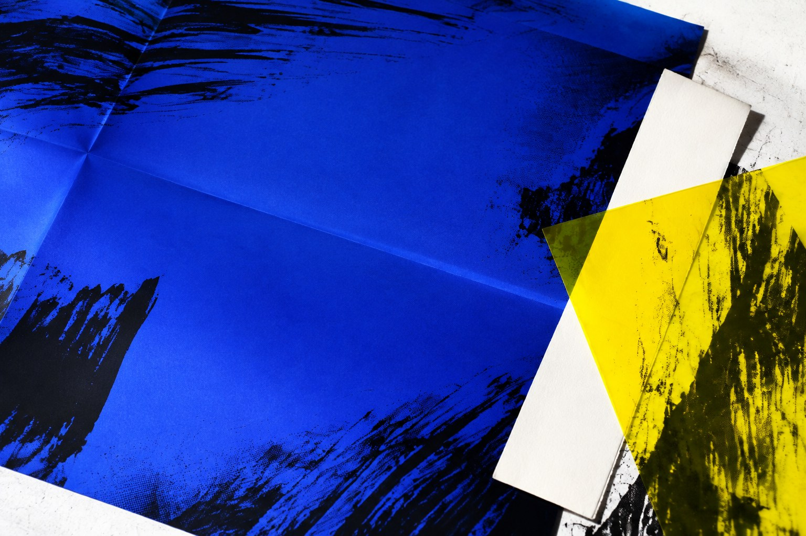

01 / Apparel & visual systemsDATWA.
DATWA.
Ideas in
circulation.
Made-to-order apparel. Layered graphics, structural marks, and a collection-led approach to identity.
Enter DATWA ↗
Some ideas become companies.
Some become code. Some get worn.
This is where they meet.
Made-to-order apparel. Layered graphics, structural marks, and a collection-led approach to identity.
Enter DATWA ↗
Delivery software for route planning, driver tracking, dispatch, and proof of delivery.
Explore Raute ↗
Hospice durable medical equipment delivery, setup, and pickup in Southern California.
Explore DME Pro ↗Creations of the Ill Minded brings together my companies, software, clothing, and creative work. Each project has its own purpose. Together, they make a practice.
No projects match your search.